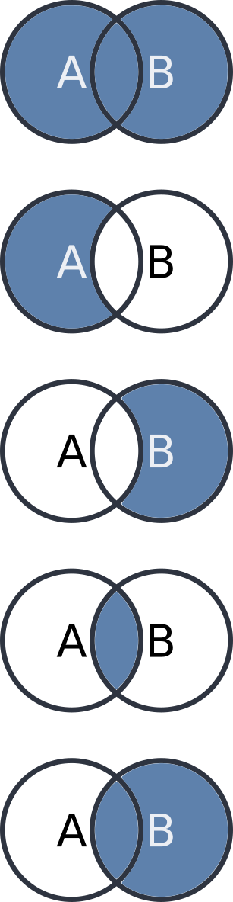

Shapes
Jed Rembold
Tuesday, April 5, 2022
Announcements
- Homework 9 due on Friday
- Project partner assignments and guidelines went out on Saturday!
- We’ll go over the test in a moment
- We have some spare time this semester, which we could use in a few ways or at some different times. I’m going to poll you on what would work best for you after the test discussion
- Polling today: www.PollEv.com/jedrembold441
Test Results

- Average: 83.2%
- Median: 87.5%
- St Dev: 15.4%
Problem 1
SELECT *
FROM A
JOIN B
ON A.key = B.key;SELECT *
FROM A
RIGHT JOIN B
ON A.key = B.key;SELECT *
FROM A
LEFT JOIN B
ON A.key = B.key
WHERE B.key IS NULLSELECT *
FROM A
FULL OUTER JOIN B
ON A.key = B.key
Problem 2
INSERT INTO tab2 VALUES
('Greg', 'low', 'blue');UPDATE tab3
SET H = H - '1 day'::interval
WHERE K = 'blue';DELETE FROM tab2
WHERE E = 'Lilly';UPDATE tab1
SET B = B + 1
WHERE A ILIKE 'J%';ALTER TABLE tab1
ADD PRIMARY KEY (B);ALTER TABLE tab3
ADD FOREIGN KEY (I)
REFERENCES tab1(C);Problem 3
- Which route (color) has the most pubs along it?
- How many friends live on the most expensive (per stop) bus route?
- If you were to ride the entirety of the “blue” route, hitting every stop and buying one beer at any pub that might be at that stop, what would the total price of your evening out be (including bus fare)?
Problem 4a
| name | beard_color | coat_color | lucky_num |
|---|---|---|---|
| Lucky | red | green | 4 |
| Connor | blond | red | 2 |
| Sean | red | red | 8 |
| Aoife | white | green | 4 |
| Finley | brown | green | 6 |
| Teagan | red | red | 10 |
SELECT coat_color, MIN(beard_color)
FROM leprechauns
GROUP BY coat_color
HAVING SUM(lucky_num) > 15;Problem 4b
| name | beard_color | coat_color | lucky_num |
|---|---|---|---|
| Lucky | red | green | 4 |
| Connor | blond | red | 2 |
| Sean | red | red | 8 |
| Aoife | white | green | 4 |
| Finley | brown | green | 6 |
| Teagan | red | red | 10 |
SELECT
lep1.name,
lep2.name,
lep1.lucky_num + lep2.lucky_num as total_luck
FROM leprechauns as lep1
JOIN leprechauns as lep2
ON lep1.beard_color = lep2.coat_color AND
lep1.name != lep2.name;Problem 4c
DELETE FROM leprechauns
WHERE beard_color = coat_color AND
name NOT ILIKE '%g%';
ALTER TABLE leprechauns ADD COLUMN age text;
UPDATE leprechauns
SET age = (lucky_num + 24)::text;
DELETE FROM leprechauns
WHERE age ILIKE '2_';
ALTER TABLE leprechauns DROP COLUMN coat_color;
SELECT * FROM leprechauns;| name | beard_color | coat_color | lucky_num |
|---|---|---|---|
| Lucky | red | green | 4 |
| Connor | blond | red | 2 |
| Sean | red | red | 8 |
| Aoife | white | green | 4 |
| Finley | brown | green | 6 |
| Teagan | red | red | 10 |
What would be your preference?
- We have 5 lecture days left at this point and around 2.5–3 days left of book material.
- We have some options of how to utilize the extra time we have:
- Project working day(s)
- Would sooner or later be more useful?
- Tutorial on webscraping in R and Python?
- SQL WINDOW functions?
- Project working day(s)
Your Turn!
- In the pairs below, import in the data here, which is a collection of the small liberal art NW colleges along with their latitude and longitudes. See if you can add a new column with the necessary data type, add an index, and then answer the following questions:
- What other schools are within 100km of Willamette?
- What two schools are the closest together?
- Pairs:
- Jack, Douglas and Leo
- Paul and Aidan
- Madeline and Maya
- Gordy and Hayden
Shapefiles
- Life would be very painstaking if you had to recreate complex polygons point by point
- Instead, most sources of spatial information that is more than a single point distribute that information in what is commonly called a shapefile
- Shapefiles are technically the data format developed for the ArcGIS platform
- Basically a zip which includes several files that contain the necessary information (.shp, .shx, and .dbf, at least)
- The shapefile contains all the same information as we want, concerning lines, polygons, points, etc, as well as extra explanatory information or annotations
- The general plan is to import the shapefile information into its own table within our database
shp2pgsql
- PostGIS comes with a command line utility called
shp2pgsqlon all operating systems- Windows users can run a graphical version of the same program, but it is not available on Mac and Linux
- If you want to run the graphical version, I’ll direct you to the book’s explanation, which is covered in depth
- Windows users can run a graphical version of the same program, but it is not available on Mac and Linux
- Like many command line utilities,
shp2pgsqlutilizes several flags to control its behavior-I→ sets up a GIST index on the geometry column-s→ specifies a specific SRID-W→ specifies a particular encoding if needed (sometimes necessary for location names)
shp2pgsql -I -s SRID -W ENCODING SHAPEFILE.SHP TABLE_NAME
Bringing Into PGSQL
By itself,
shp2pgsqlwill just generate SQLYou could save or copy that output and then run it in your database, but it can be more useful to pass that SQL directly into your database as it is created
This can be done with the
|(pipe) operatorAll together then, the command would look like below (all on one line)
shp2pgsql -I -s SRID -W ENCODING SHAPEFILE.SHP TABLE_NAME | pgsql -d DATABASE -U postgresShapefiles will usually create geometry objects, which you could then cast to geography as needed
Back to Text
- Since the shapefile spatial information will be encoded directly to a geometry type, it can be tricky to know what exactly you are working with at times
- You can call the
ST_AsText()function on any geometry (or geography) object to output its WKT representation- This can also be useful if you need to get it into a text form to copy into another location
SELECT ST_AsText(geom)
FROM table_name
LIMIT 1;PostGIS Polygon Functions
- Working with shapefiles gives an easy way to gain access to complex polygonal spatial information
- PostGIS has several useful functions to interact with polygons:
ST_Area(poly)will return the area of the provided polygon. This will be in SRID specified units if geometry or square meters if geographyST_Within(point, poly)will return a True/False as to whether the given point lies within the provided polygon- Make sure your SRID values match for point and poly! Or you could get bizarre results!